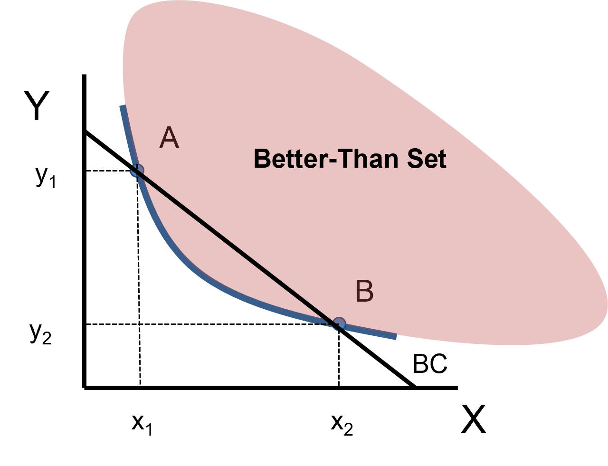
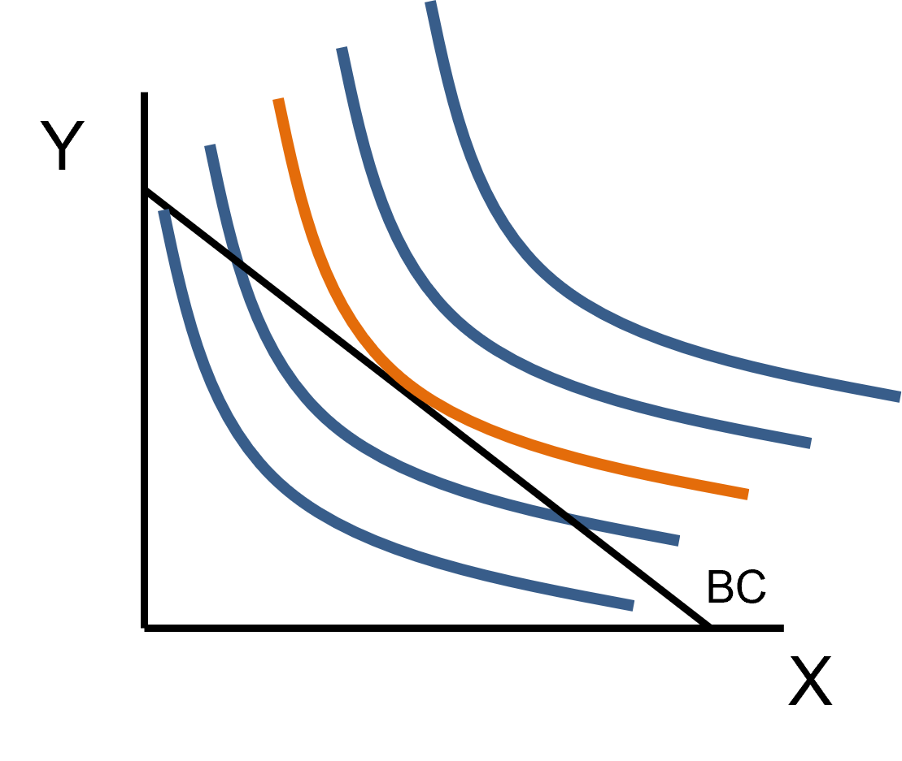

Math Makes Point C special
This is the point where the BC line and the IC curve have the exact same slope, this is also known as the point where they are tangent
. . .
This helps us put the intuition we gained from the graph together with the math
. . .
The key to finding the utility maximizing bundle (the best mix of \(x\) and \(y\)) you have to find the bundle where the BC and IC have the same slope
Why Does This Work?
Let’s recall what the Slope of the IC means:
. . .
It is the Negative MRS
It tells you how much \(y\) you would be willing to give up to get another unit of \(x\)?
. . .
Now recall what the Slope of the BC means:
. . .
It is the Negative Price Ratio
It tells you how much \(y\) you would have to give up to get another unit of \(x\)?
Why Does This Work?
Imagine what it would it mean if these two slopes were not equal
. . .
You are consuming Bundle A where:
The Negative MRS is \(-4\)
What does this mean?
- You are WILLING to give up 4 units of \(y\) for 1 unit of \(x\)
. . .
Let’s also say that the Negative Price Ratio is \(-3\)
What does this mean?
- You HAVE to give up 3 units of \(y\) for 1 unit of \(x\)
. . .
Because it is “cheaper” to trade \(y\) for \(x\) than you are willing to, you will make the trade
. . .
Is this a utility maximizing bundle? Why or Why not?
Lots of non-rhetorical questions at each pause
Why Does This Work?
If \(\text{Negative MRS } \neq \text{ Price Ratio}\) then you trade that bundle for another, which means that you were not at a utility maximizing bundle
. . .
The logic here is:
- If you willingly move away from a chosen bundle, then that bundle, by definition, cannot be utility maximizing
. . .
Let’s draw it!
Graph Takeaway

. . .
If \(\text{Negative MRS } < \text{ Price Ratio}\) (Point A)
Graphically, this means that the IC is steeper than the BC
Trading away some \(y\) for some \(x\) moves you down and to the right in the better-than set
If \(\text{Negative MRS } > \text{ Price Ratio}\) (Point B)
Graphically, this means that the IC is flatter than the BC
Trading away some \(x\) for some \(y\) moves you up and to the left in the better-than set
Graph Takeaway - Part II
The graph implicitly says:
There are an infinite number of ICs that all correspond to different levels of utility
There is only one BC
Utility maximization happens only when you find the point on the BC that touches the highest possible IC (once)
. . .

Slope Logic Summary
The logic takaways here are:
When you have a curved IC, you have to set the slope of the IC equal to the slope of the BC to find the utility-maximizing bundle
If they are not equal, you would be willing to make some trade to a different bundle
The magical point of maximization only occurs if the ICs are Non-Crossing, Monotonic, and Convex
- The weakly monotonic and weakly convex arguments we saw satisfy this
Most importantly, there is only one magical point